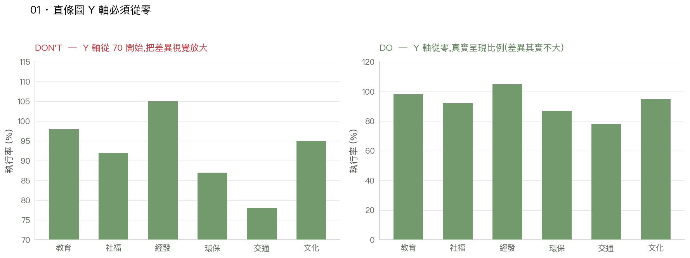
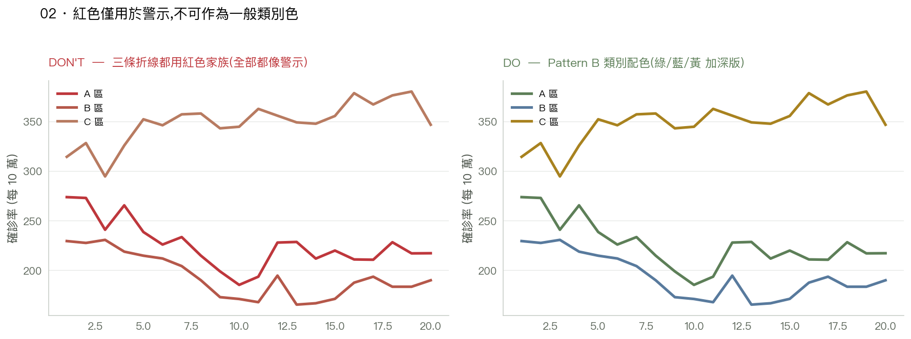
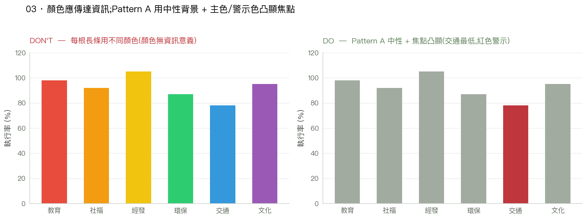
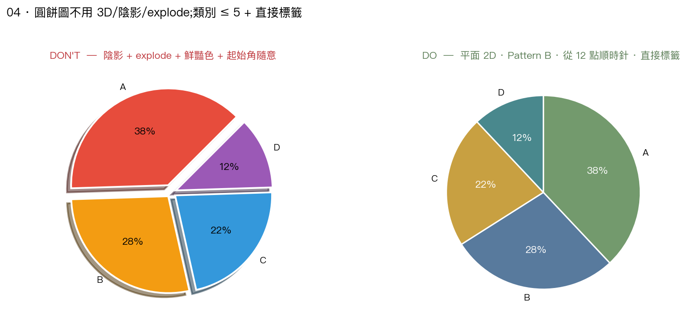
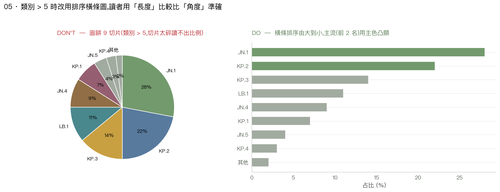
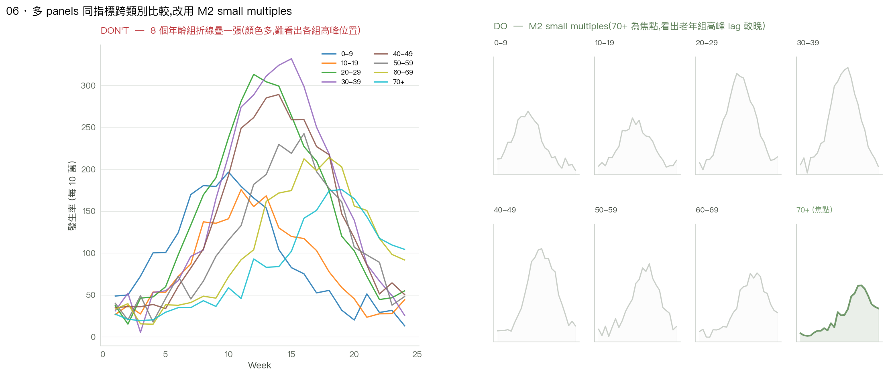
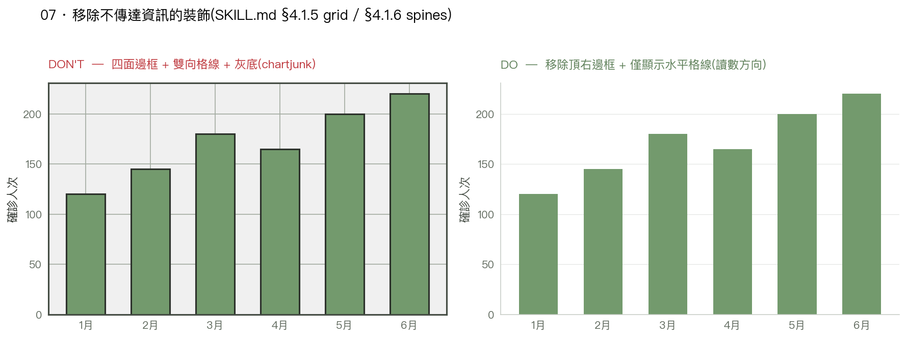
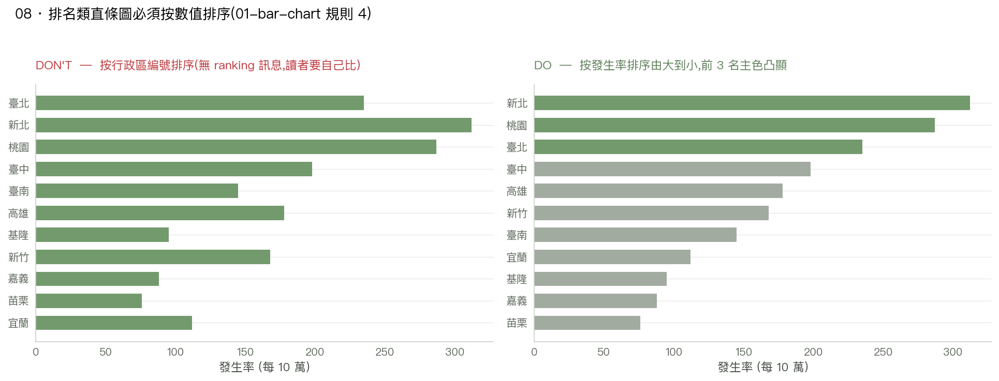

01Y 軸截斷誇大差異

直條圖比較的是「長度」,截斷 Y 軸會嚴重誤導比例感受。即使資料變動範圍很小(本例 78-105),仍應從零起算;若想凸顯變化,改用折線圖或加註標籤。本指引此為鐵則(僅直條圖必從零,折線/區域圖可視情境決定)。
02紅色濫用作類別色

紅色家族(Alert Red、Terracotta、Clay)僅用於警示,不可作為一般類別配色。多條折線都用紅色,讀者會感到「全部都很糟」,情緒被視覺放大。改用 Pattern B 類別配色(綠/藍/黃 LINE_COLORS 加深版),折線細也能過 WCAG AA。
03每根長條不同色(彩虹)

顏色應該傳達資訊。每根長條不同色但顏色無語意,只是視覺噪音,反而分散注意力。Pattern A 用中性背景(NEUTRAL.400)+ 主色/警示色凸顯焦點 ── 讀者一眼看到「哪根是重點」。
04過度裝飾圓餅(3D / 陰影 / explode)

3D 視角讓比例失真,陰影分散注意力,explode 破壞比較。圓餅圖只在「類別 ≤ 5、總和 100%、單一時點、切片差異 ≥ 5%」時用,且必須平面 2D + Pattern B 類別配色 + 從 12 點順時針 + 直接標籤(類別 + 百分比),不依賴圖例。
05圓餅切片過多(類別 > 5)

類別超過 5 個時圓餅就難讀。讀者比較「角度」遠不如比較「長度」準確 ── 改用排序橫條圖(由大到小),主流類別用主色凸顯,其餘 NEUTRAL.400。讀者一眼看出 ranking 與相對重要度。
06多 panel:spaghetti 疊一張 vs M2 small multiples

同指標跨多分類維度(4+ panels),疊一張折線圖讀者分不清各組形態。改用 M2 small multiples 規範:統一 Y/X scale、共用圖例、focus panel 用主色 + 其餘 NEUTRAL.300。本例焦點 70+ 年齡組,清楚看出老年組高峰 lag 較晚。
07多餘框線/格線 vs 極簡

移除不傳達資訊的裝飾。四面邊框 + 垂直水平格線 + 灰底背景都是 chartjunk(Tufte 用語),不增加資訊,只增加視覺負擔。本指引預設(
apply_style()):移除頂右邊框、僅顯示水平格線(讀數方向)、白底。
08排名圖按字典序 vs 按數值排序

排名類直條/橫條圖必須按數值排序。按行政區編號(字典序、建檔順序)排,讀者要自己 scan 才能比較;按發生率由大到小排,排名一目了然,前 3 名用主色凸顯,其餘 NEUTRAL.400 維持為背景參考。